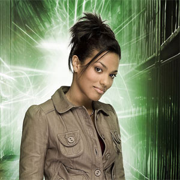

| Rose Tyler |
| Amy Pond |
| Martha Jones |
| Jack Harkness |
| Lady Christina de Souza |
| Rory Williams |
| River Song |
| Clara Oswald |
Martha Jones
Portrayed by Freema Agyeman.
Martha Jones is a fictional character played by Freema Agyeman in the long-running British science fiction television series Doctor Who and its spin-off series, Torchwood. She is a companion of the Tenth Doctor in Doctor Who, replacing Rose Tyler (Billie Piper). According to the character's creator and executive producer Russell T Davies in his non-fiction book Doctor Who: The Writer's Tale, the character was developed from the beginning with the intention of appearing for a whole of the 2007 series, and to later make guest appearances in subsequent series and crossover appearances in the show's two spin-offs; Martha subsequently made guest appearances in Torchwood series two and in Doctor Who series four in 2008 and special episode The End of Time in 2010. Martha was also intended to make guest appearances in the 2009 series of Torchwood and The Sarah Jane Adventures, but could not due to the actress' other obligations.[1]
Within the series' narrative, Martha begins as a medical student who becomes the Doctor's time travelling companion after an incident at the hospital where she works. After well over a year (from the perspective of the Doctor and herself) of service at the Doctor's side, Martha parts from the Doctor's company as she cannot bear her own unrequited love for him. After returning to life on Earth, becoming engaged and finishing her medical degree, Martha finds a newfound level of independence when she is recruited into the paranormal military organisations UNIT, and briefly Torchwood. Having faced the end of the world single-handedly during her time with the Doctor, Martha is recognised for her skills both in the field and in medicine.
Martha Jones is introduced in the 2007 series of Doctor Who, first appearing in the episode "Smith and Jones". When the hospital she works at is teleported to the Moon, medical student Martha helps save the day alongside an alien time traveller known only as the Doctor (David Tennant). To thank her for her help, the Doctor invites her to join him for a supposed single trip in his time machine the TARDIS,[2] but later accepts her as his full-time "companion", admitting that she was "never just a passenger",[3] and he even gives her the key to the TARDIS.[4] Martha becomes frustrated because the Doctor is oblivious to her feelings for him, and she expresses concern that she is simply a rebound after the Doctor's painful loss of his previous companion, Rose (Billie Piper). When the amnesiac Doctor falls in love in the "Human Nature"/"The Family of Blood" two-parter, a pained Martha claims "You had to go and fall in love with a human... and it wasn't me".[5][6] In the series finale, in which the Doctor's nemesis the Master (John Simm) takes over planet Earth, capturing both the Doctor and fellow companion Captain Jack Harkness (John Barrowman), Martha is left alone to save the world as the Doctor and Jack are captured but she manages to escape by teleporting away. On the run from the Master, she spends a year travelling the world in a plan which restores the incapacitated Doctor and reverses time, undoing the Master's actions. Able to remember the events during the Master's reign, Martha then leaves the TARDIS of her own accord, telling the Doctor that she can't waste her life pining for someone when the relationship cannot happen, but promises that she will see him again.[7] Martha, as voiced by Freema Agyeman, also appears in the 2007 animated serial The Infinite Quest, which aired in twelve weekly segments during the run of the 2007 series.